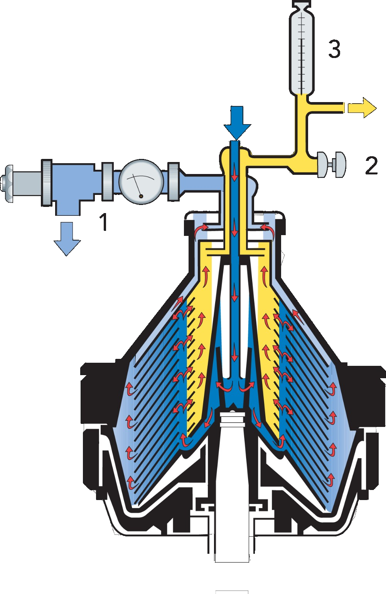
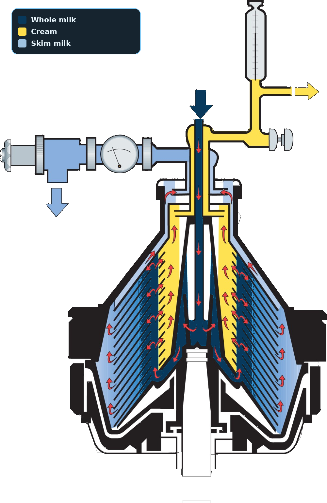
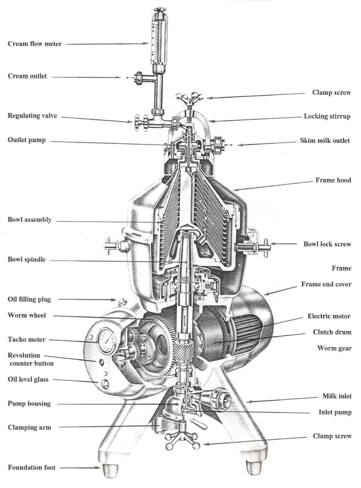
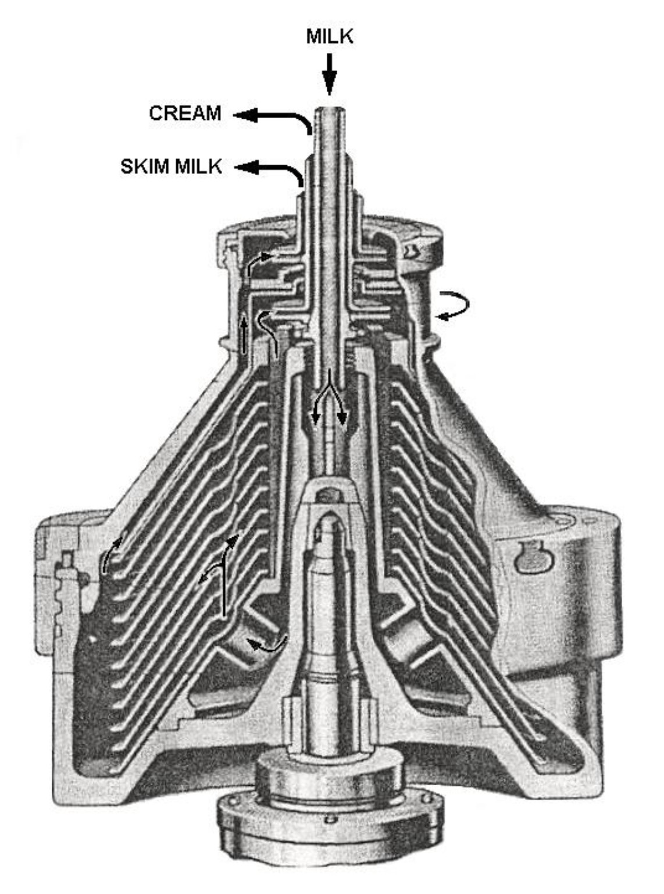

Cream Separator
Explore how a high-speed centrifugal separator divides milk into cream and skim milk — from the feed system and distributor to the disc stack, outlet devices, operating conditions and separation calculations.
Milk → Cream + Skim Milk
A cream separator uses rapid rotation to create a strong centrifugal field inside its bowl. Milk entering the bowl contains fat globules dispersed in the liquid phase. Since the fat globules are less dense than the rest of the milk, they travel toward the rotation axis while the denser skim-milk phase travels toward the bowl wall.

Quick Process Reference
01 · What Is a Cream Separator?
A cream separator is a mechanical device used to split milk into a cream-rich stream and a skim-milk stream. It is normally built around a bowl that rotates at high speed. The separation depends on the difference in density between milk fat and the surrounding liquid.
The bowl contains a set of closely spaced conical discs. These discs divide the incoming milk into thin layers, allowing fat globules to move only a short distance before reaching the cream side of the flow. At the same time, the denser liquid moves toward the outside of the bowl.
Cream phase
The fat-rich phase formed near the central side of the separation zone. It is led to the cream outlet.
Skim-milk phase
The denser, low-fat liquid collects toward the outer region and leaves through the skim outlet.
02 · Working Principle — Step by Step
1. Milk enters
The feed enters through the machine's inlet arrangement and is directed toward the rotating bowl.
2. The distributor spreads the feed
Before useful separation begins, the incoming milk is distributed so that the disc channels receive the feed as evenly as possible.
3. The bowl creates the force field
Rapid rotation produces a radial acceleration. The denser liquid experiences a stronger outward tendency than the lighter fat phase.
4. Separation occurs between discs
Inside each narrow channel, the skim-milk phase moves outward and fat globules move inward. The same process occurs simultaneously through many channels.
5. The phases collect
After migration, the cream-rich and skim-rich liquids reach different collection regions inside the bowl.
6. Solids move to the outside
Dense suspended particles are driven toward the bowl periphery, where they can collect or be removed in a self-cleaning design.

03 · How Separation Happens Between the Discs
The disc stack can be imagined as a group of very thin inclined passages. Milk enters these passages and is carried around by the rotating bowl. The fat globules experience the centrifugal field differently from the surrounding liquid because their density is lower. They therefore drift inward relative to the skim-milk phase.
The closer the discs are placed, the smaller the migration distance becomes. This is one of the main reasons a disc-stack separator can process a large quantity of milk in a compact bowl.

04 · Components — Detailed
Bowl and separation assembly
- Bowl body: rotating vessel in which the separation field is created.
- Bowl hood: closes the bowl and forms the upper flow passages.
- Bowl locking system: keeps the rotating bowl components securely assembled.
- Distributor: receives the feed and distributes it into the separation channels.
- Disc stack: closely spaced conical discs that form the active separation area.
- Distribution holes: passages that guide milk into the disc channels.
- Sediment space: outer region where heavier suspended matter can collect.
Drive and product system
- Spindle: central shaft carrying the bowl.
- Drive gear: transfers motor power to the high-speed rotating assembly.
- Electric motor: provides the mechanical input.
- Clutch/coupling: controls transmission of drive power during starting and operation.
- Milk inlet: entry point for the feed.
- Cream outlet: discharge for the fat-rich phase.
- Skim-milk outlet: discharge for the low-fat continuous phase.
- Outlet device: may use a paring disc or another internal pressure-recovery arrangement.

05 · Disc Stack — The Heart of Separation
A single large open bowl would give fat globules a long distance to travel. The disc stack changes the geometry completely: many conical discs divide the liquid into thin layers. The available separation area becomes large while the distance a globule must migrate becomes small.
More separation area
Many channels work simultaneously.
Shorter migration
Fat globules do not have to travel across the full bowl.
Controlled flow
The inclined channels guide the separated phases toward their collection regions.
06 · Stokes' Law — Understanding Fat-Globule Movement
Stokes' law gives a useful way to understand how a small spherical particle moves through a viscous liquid. For a cream separator, the same idea can be adapted to the rotating field: instead of ordinary gravity being the driving acceleration, the fat globule is acted upon by the radial acceleration produced by the rotating bowl.
Symbols
- v — migration velocity
- d — fat-globule diameter
- ρm — density of milk phase
- ρf — density of fat globule
- ω — angular speed
- r — radial position
- μ — dynamic viscosity
What the equation teaches
- A larger globule has a much greater migration tendency because diameter appears as d².
- A greater density difference increases the driving force.
- Increasing rotational speed has a strong effect because ω is squared.
- Higher viscosity slows migration.
- The expression is a simplified model; real machines also depend on disc geometry, flow distribution, throughput and globule-size distribution.
07 · Why Warm Milk Helps Separation
Viscosity falls
Warming milk reduces its resistance to movement.
Fat moves more easily
Lower viscosity supports faster movement through the narrow disc channels.
There is a practical limit
More heat is not automatically better; product quality and equipment limitations must also be considered.
08 · Top Feed and Bottom Feed
Separators can be arranged so that milk reaches the bowl from above or through a lower feed path. The important point is not the name of the arrangement but how smoothly the distributor brings the feed into the disc stack.
Top feed
Milk approaches the bowl from the upper side and is guided toward the distributor before entering the separation zone.

Bottom feed
Milk reaches the lower part of the bowl before being guided upward into the active disc region. The internal route varies with machine construction.
The incoming milk should be brought close to bowl speed and distributed evenly so that one part of the disc stack is not overloaded.
09 · Open, Semi-open and Hermetic Designs
Open
Product has more exposure to the surrounding atmosphere. The construction is comparatively simple.
Semi-open
The separated liquid is recovered from the rotating liquid by a stationary paring device.
Hermetic
The product remains in a closed path and internal pumping arrangements are used to discharge the separated phases.
10 · Paring Disc — How It Works
The separated liquid is still spinning when it reaches a semi-open outlet. A stationary paring disc is placed into this moving liquid. The liquid enters the paring passage and its rotational motion is converted into pressure that helps push the product into the outlet line.
Rotating liquid
Carries tangential velocity from the bowl.
Stationary paring disc
Intercepts the moving liquid without rotating with the bowl.
Pressure generation
Uses the liquid's rotational energy to assist discharge.
11 · Cream Separator Efficiency — Simple Calculation
A convenient way to judge the separator is to see how much of the fat entering with whole milk is recovered in the cream rather than being left behind in the skim milk.
In symbols: η = [(QmFm − QsFs) / (QmFm)] × 100.
Example
Feed = 10,000 kg/h at 4% fat. Skim milk = 9,000 kg/h at 0.05% fat.
Fat in skim = 9,000 × 0.05/100 = 4.5 kg/h
Fat recovered = 400 − 4.5 = 395.5 kg/h
η = 395.5/400 × 100 = 98.875%
Interpretation
- Less fat left in skim generally means better recovery.
- Flow rate and fat percentage must both be considered.
- Temperature, throughput, bowl speed, disc condition and outlet adjustment can change the result.
12 · Cream Flow and Standardisation
Separating the milk is only one part of the job. The amount of liquid sent out with the recovered fat controls how rich the cream becomes. A regulating valve can change cream flow, while a standardisation system can recombine measured streams to reach a desired milk composition.
- More liquid through the cream outlet generally gives a less concentrated cream stream.
- Restricting cream flow generally increases cream concentration.
- Stable flow and pressure make adjustment easier.
- Automatic systems can use flow and composition measurements for continuous control.
13 · What Controls Separation Performance?
Temperature
Viscosity changes with temperature, affecting globule movement.
Globule size
Larger fat globules migrate more readily.
Feed rate
Very high throughput can reduce the opportunity for complete separation.
Bowl speed
Rotational speed determines the strength of the centrifugal field, within the machine's safe operating range.
Disc condition
Deposits, damage or incorrect assembly can disturb the thin separation channels.
Outlet settings
Cream and skim outlet conditions influence phase balance and cream concentration.
14 · Solids, Cleaning and Maintenance
Solids move outward
Sediment and other dense particles are driven toward the outer part of the bowl.
Self-cleaning designs
Some bowls can discharge accumulated solids during operation.
Manual inspection
Correct dismantling, cleaning, inspection and reassembly are essential for hygienic and safe operation.
15 · Cream Separator in a Dairy Processing Line
In a dairy plant, the separator can sit between milk reception/conditioning and later standardisation or processing steps. The machine produces a concentrated cream stream and a skim-milk stream. These streams may be used separately or combined in controlled proportions when a target milk composition is required.
16 · Student Quick Revision
Density difference + centrifugal field separates fat-rich and skim-milk phases.
Creates many thin channels and reduces the distance required for fat migration.
Fat-rich material moves toward the axis; denser skim milk moves toward the periphery.
Migration is favoured by larger globules and stronger centrifugal acceleration and opposed by higher viscosity.
Compare the fat entering with the fat left in the skim stream.
Temperature, feed rate, bowl speed, disc condition and outlet adjustment all influence performance.